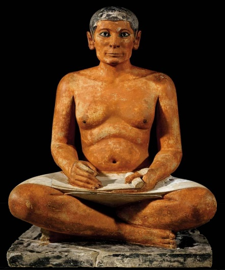

| 讀 | 默想 |
|---|---|
| 出埃及記36章8～38 | |
| 8 他們中間，凡心裡有智慧做工的，用十幅幔子做帳幕。這幔子是比撒列用撚的細麻和藍色、紫色、朱紅色線製造的，並用巧匠的手工繡上基路伯。 9 每幅幔子長二十八肘，寬四肘，都是一樣的尺寸。 10 他使這五幅幔子幅幅相連，又使那五幅幔子幅幅相連； 11 在這相連的幔子末幅邊上做藍色的鈕扣，在那相連的幔子末幅邊上也照樣做； 12 在這相連的幔子上做五十個鈕扣，在那相連的幔子上也做五十個鈕扣，都是兩兩相對； |
26:1 「你要用十幅幔子做帳幕。這些幔子要用撚的細麻和藍色、紫色、朱紅色線製造，並用巧匠的手工繡上基路伯。 26:2 每幅幔子要長二十八肘，寬四肘，幔子都要一樣的尺寸。 26:3 這五幅幔子要幅幅相連；那五幅幔子也要幅幅相連。 26:4 在這相連的幔子末幅邊上要做藍色的鈕扣；在那相連的幔子末幅邊上也要照樣做。 26:5 要在這相連的幔子上做五十個鈕扣；在那相連的幔子上也做五十個鈕扣，都要兩兩相對。 |
| 13 又做五十個金鉤，使幔子相連。這才成了一個帳幕。 14 他用山羊毛織十一幅幔子，作為帳幕以上的罩棚。 15 每幅幔子長三十肘，寬四肘；十一幅幔子都是一樣的尺寸。 | 26:6 又要做五十個金鉤，用鉤使幔子相連，這才成了一個帳幕。 26:7 「你要用山羊毛織十一幅幔子，作為帳幕以上的罩棚。 26:8 每幅幔子要長三十肘，寬四肘；十一幅幔子都要一樣的尺寸。 |
| 16 他把五幅幔子連成一幅，又把六幅幔子連成一幅； | 26:9 要把五幅幔子連成一幅，又把六幅幔子連成一幅，這第六幅幔子要在罩棚的前面摺上去 |
| 17 在這相連的幔子末幅邊上做五十個鈕扣，在那相連的幔子末幅邊上也做五十個鈕扣； 18 又做五十個銅鉤，使罩棚連成一個； 說明：26章的語氣，是上帝吩咐摩西要這樣、這樣做。又要那樣那樣做。是說明製作的方法與細節。 |
26:10 在這相連的幔子末幅邊上要做五十個鈕扣；在那相連的幔子末幅邊上也做五十個鈕扣。 26:11 又要做五十個銅鉤，鉤在鈕扣中，使罩棚連成一個。 26:12 罩棚的幔子所餘那垂下來的半幅幔子，要垂在帳幕的後頭。 26:13 罩棚的幔子所餘長的，這邊一肘，那邊一肘，要垂在帳幕的兩旁，遮蓋帳幕。 |
| 19 並用染紅的公羊皮做罩棚的蓋，再用海狗皮做一層罩棚上的頂蓋。 20 他用皂莢木做帳幕的豎板。 21 每塊長十肘，寬一肘半； |
26:14 又要用染紅的公羊皮做罩棚的蓋；再用海狗皮做一層罩棚上的頂蓋。 15 「你要用皂莢木做帳幕的豎板。 16 每塊要長十肘，寬一肘半； |
| 22 每塊有兩榫相對。帳幕一切的板都是這樣做。 23 帳幕的南面做板二十塊。 24 在這二十塊板底下又做四十個帶卯的銀座：兩卯接這塊板上的兩榫，兩卯接那塊板上的兩榫。 25 帳幕的第二面，就是北面，也做板二十塊 26 和帶卯的銀座四十個：這板底下有兩卯，那板底下也有兩卯。 27 帳幕的後面，就是西面，做板六塊。 28 帳幕後面的拐角做板兩塊。 29 板的下半截是雙的，上半截是整的，直到第一個環子；在帳幕的兩個拐角上都是這樣做。 30 有八塊板和十六個帶卯的銀座，每塊板底下有兩卯。 |
26:17 每塊必有兩榫相對。帳幕一切的板都要這樣做。 18 帳幕的南面要做板二十塊。 19 在這二十塊板底下要做四十個帶卯的銀座，兩卯接這塊板上的兩榫，兩卯接那塊板上的兩榫。 20 帳幕第二面，就是北面，也要做板二十塊 21 和帶卯的銀座四十個；這板底下有兩卯，那板底下也有兩卯。 22 帳幕的後面，就是西面，要做板六塊。 23 帳幕後面的拐角要做板兩塊。 24 板的下半截要雙的，上半截要整的，直頂到第一個環子；兩塊都要這樣做兩個拐角。 25 必有八塊板和十六個帶卯的銀座；這板底下有兩卯，那板底下也有兩卯。 |
| 31 他用皂莢木做閂：為帳幕這面的板做五閂， 32 為帳幕那面的板做五閂，又為帳幕後面的板做五閂， 33 使板腰間的中閂從這一頭通到那一頭。 34 用金子將板包裹，又做板上的金環套閂；閂也用金子包裹。 |
26:26 「你要用皂莢木做閂：為帳幕這面的板做五閂， 26:27 為帳幕那面的板做五閂，又為帳幕後面的板做五閂。 26:28 板腰間的中閂要從這一頭通到那一頭。 26:29 板要用金子包裹，又要做板上的金環套閂；閂也要用金子包裹。 26:30 要照著在山上指示你的樣式立起帳幕。 |
| 35 他用藍色、紫色、朱紅色線，和撚的細麻織幔子，以巧匠的手工繡上基路伯。 36 為幔子做四根皂莢木柱子，用金包裹，柱子上有金鉤，又為柱子鑄了四個帶卯的銀座。 本章的記載的口氣，是「他用。。。」，是實際製作的記錄。比26章少記的部份，是架設安放會幕要做的事，不是製作會幕物件的內容。並不是疏漏。 |
26:31 「你要用藍色、紫色、朱紅色線，和撚的細麻織幔子，以巧匠的手工繡上基路伯。 26:32 要把幔子掛在四根包金的皂莢木柱子上，柱子上當有金鉤，柱子安在四個帶卯的銀座上。 33 要使幔子垂在鉤子下，把法櫃抬進幔子內；這幔子要將聖所和至聖所隔開。 34 又要把施恩座安在至聖所內的法櫃上， 35 把桌子安在幔子外帳幕的北面；把燈臺安在帳幕的南面，彼此相對。 |
| 37 拿藍色、紫色、朱紅色線，和撚的細麻，用繡花的手工織帳幕的門簾； 38 又為簾子做五根柱子和柱子上的鉤子，用金子把柱頂和柱子上的杆子包裹。柱子有五個帶卯的座，是銅的。 |
26:36 「你要拿藍色、紫色、朱紅色線，和撚的細麻，用繡花的手工織帳幕的門簾。 37 要用皂莢木為簾子做五根柱子，用金子包裹。柱子上當有金鉤；又要為柱子用銅鑄造五個帶卯的座。」神對會幕的啟示是從帳幕裡的器皿開始的，但建造的順序卻是先造帳幕，再造器皿，這樣才能讓器皿得著遮蓋。 |
|  上圖：古埃及時期的抄寫員雕塑（主前2620-2500年），現藏于盧浮宮。盤腿而坐是古埃及抄寫員的常用姿勢，古希伯來文士也採用類似的姿勢。抄寫聖經是一件艱巨的工作， 出埃及記36到39章並不是簡單地把25到31章的經文抄過來，而是要付出代價，認真地把每一個建造步驟記錄下來，與山上的樣式對照。 |
36章8-38節記錄了建造帳幕的過程，完全遵照26章1-37節神在山上的指示，但少了26章的9b、12-13、30、33-35節，因為那些指示是在支搭帳幕時才需要。這些細節見證了神親自呼召和管理的工人對神的絕對順服：「要謹慎做這些物件，都要照著在山上指示你的樣式」（25：40）。 這些「智慧人」（4節）憑著自己的知識和經驗，會發現神的設計有許多不合常理的地方。但他們知道有限的人只能看見眼前那一點事，但神的計畫卻是從永遠到永遠，所以毫無保留地放下自己的意見，甘心樂意地順服神的設計和安排。人在神面前放下錢財、時間、精力是奉獻，但放下自己才是神眼中最寶貴的奉獻。 瑪拉基書三章16節：那時，敬畏耶和華的彼此談論，耶和華側耳而聽，且有紀念冊在他面前，記錄那敬畏耶和華、思念他名的人。 |
| 親愛的天父上帝，我感謝祢。在這36章祢叫摩西記錄了比撒列等人實際製作會幕的情形，對照26章祢在山上吩咐摩西的樣式。使我知道，我按照祢的心意所作的服事，祢都詳細記載在天上的紀念冊。感謝祢的應許，「在主裡勞苦，不是徒然的。」（為這週主日敬拜的同工禱告，李桃瑩教師講道，為你小組中勞苦服事的同工禱告）奉耶穌基督的名禱告，阿們。 | |